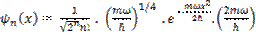
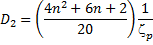
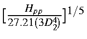

In a local diatomic frame there are 22 unique two-electron two-center integrals for each pair of heavy (non-hydrogen) atoms. These are shown in Table 1.
|
1 |
<ss|ss> |
12 |
<s pσ|p<πpπ> |
|
2 |
<ss|pππ> |
13 |
<spσ|pσpσ> |
|
3 |
<ss|pσpσ> |
14 |
<ss|s pσ> |
|
4 |
<pπpπ|ss> |
15 |
<pπpπ|s pσ> |
|
5 |
<pσpσ|ss> |
16 |
<pσpσ|s pσ> |
|
6 |
<pπpπ|pπpπ> |
17 |
<s pπ|s pπ> |
|
7 |
<pπpπ|pπ'pπ' > |
18 |
<s pσ|s pσ> |
|
8 |
<pπpπ|pσpσ> |
19 |
<s pπ| pπ pσ> |
|
9 |
<pσpσ|pπpπ> |
20 |
<pπ pσ| s pπ> |
|
10 |
<pσpσ|pσpσ> |
21 |
<pπ pσ|pπpσ> |
|
11 |
<s pσ|ss> |
22 |
<pπpπ'|pπpπ'> |
With the exception of integral 22, all the integrals can be calculated using different techniques without loss of rotational invariance. That is, no integral depends on the value of another integral, except for number 22. As with the Hpp monocentric integral, it is easy to show that:
<pπpπ'|pπpπ' > = 1/2(<pπpπ|pπpπ> - <pπpπ|pπ'pπ' >).
The electron density distributions are approximated by a series of point charges. There are four possible types of distribution. These are given in Table 2.
|
Monopole |
Unit negative charge centered on the |
|
(1 charge) |
nucleus |
|
|
|
|
Dipole |
+1/2 charge located at position (x,y,z), |
|
(2 charges) |
-1/2 charge located at position (-x,-y,-z) |
|
|
|
|
Linear Quadrupole |
+1/2 charge located at the nucleus, -1/4 charge |
|
(3 charges) |
at positions (x,y,z) and at (-x,-y,-z) |
|
|
|
|
Square Quadrupole |
Four charges of magnitude +1/4, -1/4, +1/4 |
|
(4 charges) |
and -1/4 forming a square centered on the nucleus. |
These are used to represent the four types of atomic orbital products (Table 3).
While the repulsion of two like charges is proportional to the inverse distance separating the charges, boundary conditions preclude using this simple expression to represent the interelectronic interactions. Instead, the interaction energy is approximated by:
All that remains is to specify functional forms for the terms c and A. c, the distance of a multipole charge from its nucleus, is a simple function of the atomic orbitals; in the case of a s-p product, this is a vector of length D1 Bohr pointing along the p axis, where

The principal quantum number is always the same in these methods for s and p orbitals on any given atom. The corresponding distances of the charges from the nucleus for the linear and square quadrupoles are 2D2 and 21/2D2 Bohr, respectively, where
.
Now that the distances of the charges from the nucleus have been defined, the upper boundary condition can be set. In the limit, when R=0.0, the value of the two-electron integral should equal that of the corresponding monocentric integral. Three cases can be identified:
For convenience, the GA terms are given special names. These are given in Table 4.
While AM is given simply by Gss/27.21, AD and AQ are complicated functions of one-center terms and the orbital exponents--recall that, in the limit, the associated charges are not all coincident. AD and AQ are solved iteratively. Given an initial estimate of AD of
then, by iterating, an exact value of AD can be found. On iteration n the value of AD is given by
where
About 5 iterations are needed in order to get AD specified with acceptable accuracy.
Similarly, for AQ an initial estimate of is made and, again, by iterating using
where, now,
an exact value of AQ can be obtained. About 5 iterations are necessary.
Note that these equations are intrinsically unstable on finite-precision computers. The denominator (an-1 -an-2 ) rapidly becomes vanishingly small; this is, however, necessary in order to accurately define AD and AQ.
Order of storage of the two-electron integrals
Each two-electron
integral can be represented by the symbol <ij|kl>, which represents the
integral For the optimized CO molecule, using PM6, the complete set of 300
two-electron integrals is: <ss|ss> = Gss(C) <ss|xx> = Gsp(C) <ss|yy> <ss|zz>
13.3355 0.0000 11.5281 0.0000 0.0000 11.5281 0.0000 0.0000 0.0000 11.5281 C with C (one center)
<sx|sx> = Hsp(C)
0.0000 0.7173 0.0000 0.0000 0.0000 0.0000 0.0000 0.0000 0.0000 0.0000
<xx|xx> = Gpp(C) <xx|yy> = Gp2(C)
11.5281 0.0000 10.7783 0.0000 0.0000 9.4862 0.0000 0.0000 0.0000 9.4862
<sy|sy>
0.0000 0.0000 0.0000 0.7173 0.0000 0.0000 0.0000 0.0000 0.0000 0.0000
<xy|xy> = Hpp(C) = 0.5*(Gpp(C) - Gp2(C)
0.0000 0.0000 0.0000 0.0000 0.6461 0.0000 0.0000 0.0000 0.0000 0.0000
11.5281 0.0000 9.4862 0.0000 0.0000 10.7783 0.0000 0.0000 0.0000 9.4862
0.0000 0.0000 0.0000 0.0000 0.0000 0.0000 0.7173 0.0000 0.0000 0.0000
0.0000 0.0000 0.0000 0.0000 0.0000 0.0000 0.0000 0.6461 0.0000 0.0000
0.0000 0.0000 0.0000 0.0000 0.0000 0.0000 0.0000 0.0000 0.6461 0.0000
11.5281 0.0000 9.4862 0.0000 0.0000 9.4862 0.0000 0.0000 0.0000 10.7783
8.7898 1.2038 9.0369 0.0000 0.0000 8.3085 0.0000 0.0000 0.0000 8.3085 C with O (two center)
-0.8661 -0.2147 -1.0104 0.0000 0.0000 -0.6782 0.0000 0.0000 0.0000 -0.6782
9.2177 1.0807 8.9159 0.0000 0.0000 8.5077 0.0000 0.0000 0.0000 8.5077
0.0000 0.0000 0.0000 0.2241 0.2467 0.0000 0.0000 0.0000 0.0000 0.0000
0.0000 0.0000 0.0000 -0.1865 -0.2586 0.0000 0.0000 0.0000 0.0000 0.0000
8.3954 0.9975 8.3443 0.0000 0.0000 8.0901 0.0000 0.0000 0.0000 7.9903
0.0000 0.0000 0.0000 0.0000 0.0000 0.0000 0.2241 0.2467 0.0000 0.0000
0.0000 0.0000 0.0000 0.0000 0.0000 0.0000 -0.1865 -0.2586 0.0000 0.0000
0.0000 0.0000 0.0000 0.0000 0.0000 0.0000 0.0000 0.0000 0.0499 0.0000
8.3954 0.9975 8.3443 0.0000 0.0000 7.9903 0.0000 0.0000 0.0000 8.0901
11.3040 0.0000 15.8074 0.0000 0.0000 15.8074 0.0000 0.0000 0.0000 15.8074 O with O (one center)
0.0000 5.0108 0.0000 0.0000 0.0000 0.0000 0.0000 0.0000 0.0000 0.0000
15.8074 0.0000 13.6182 0.0000 0.0000 10.3328 0.0000 0.0000 0.0000 10.3328
0.0000 0.0000 0.0000 5.0108 0.0000 0.0000 0.0000 0.0000 0.0000 0.0000
0.0000 0.0000 0.0000 0.0000 1.6427 0.0000 0.0000 0.0000 0.0000 0.0000
15.8074 0.0000 10.3328 0.0000 0.0000 13.6182 0.0000 0.0000 0.0000 10.3328
0.0000 0.0000 0.0000 0.0000 0.0000 0.0000 5.0108 0.0000 0.0000 0.0000
0.0000 0.0000 0.0000 0.0000 0.0000 0.0000 0.0000 1.6427 0.0000 0.0000
0.0000 0.0000 0.0000 0.0000 0.0000 0.0000 0.0000 0.0000 1.6427 0.0000
15.8074 0.0000 10.3328 0.0000 0.0000 10.3328 0.0000 0.0000 0.0000 13.6182
The sequence of sub-matrices for a molecule with atoms in order A, B, C, D, is
as follows:
AA
AB BB
AC BC CC
AD BD CD DD
For methane, with atoms in the order: C H1, H2, H3, H4, the number of two-electron integrals
per atom pair would be:
CC 100 integrals
H1C 10 integrals
H1H1 1 integral
H2C 10 integrals
H2H1 1 integral
H2H2 1 integral
H3C 10 integrals
H3H1 1 integral
H3H2 1 integral
H3H3 1 integral
H4C 10 integrals
H4H1 1 integral
H4H2 1 integral
H4H3 1 integral
H4H4 1 integral
for a total of 150 integrals. To see how these are related, run methane
with HCORE and compare the two-electron matrix with the following integrals:TWO-ELECTRON MATRIX IN HCORE (Methane)
12.2300 0.0000 11.4700 0.0000 0.0000 11.4700 0.0000 0.0000 0.0000 11.4700 CC
0.0000 2.4300 0.0000 0.0000 0.0000 0.0000 0.0000 0.0000 0.0000 0.0000
11.4700 0.0000 11.0800 0.0000 0.0000 9.8400 0.0000 0.0000 0.0000 9.8400
0.0000 0.0000 0.0000 2.4300 0.0000 0.0000 0.0000 0.0000 0.0000 0.0000
0.0000 0.0000 0.0000 0.0000 0.6200 0.0000 0.0000 0.0000 0.0000 0.0000
11.4700 0.0000 9.8400 0.0000 0.0000 11.0800 0.0000 0.0000 0.0000 9.8400
0.0000 0.0000 0.0000 0.0000 0.0000 0.0000 2.4300 0.0000 0.0000 0.0000
0.0000 0.0000 0.0000 0.0000 0.0000 0.0000 0.0000 0.6200 0.0000 0.0000
0.0000 0.0000 0.0000 0.0000 0.0000 0.0000 0.0000 0.0000 0.6200 0.0000
11.4700 0.0000 9.8400 0.0000 0.0000 9.8400 0.0000 0.0000 0.0000 11.0800
9.0917 -0.6191 8.6000 -1.9992 0.2460 9.3181 0.0000 0.0000 0.0000 8.5239 H1C
12.8480 H1H1
9.0917 -0.7361 8.6315 0.9582 -0.1402 8.7063 1.7088 -0.2500 0.3254 9.1042 H2C
6.8458 H2H1
12.8480 H2H2
9.0917 -0.7361 8.6315 0.9582 -0.1402 8.7063 -1.7088 0.2500 -0.3254 9.1042 H3C
6.8458 H3H1
6.8458 H3H2
12.8480 H3H3
9.0917 2.0912 9.3930 0.0827 0.0344 8.5252 0.0000 0.0000 0.0000 8.5239 H4C
6.8458 H4H1
6.8458 H4H2
6.8458 H4H3
12.8480 H4H4